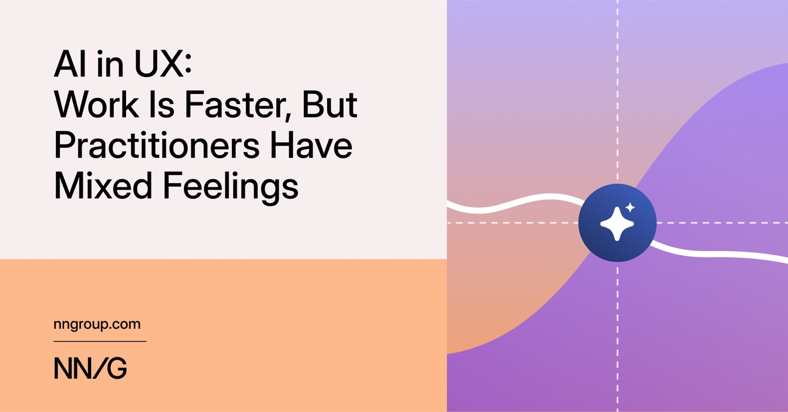
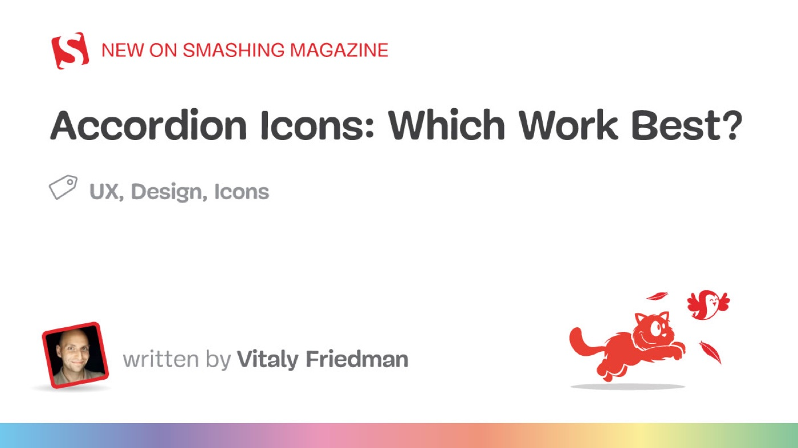
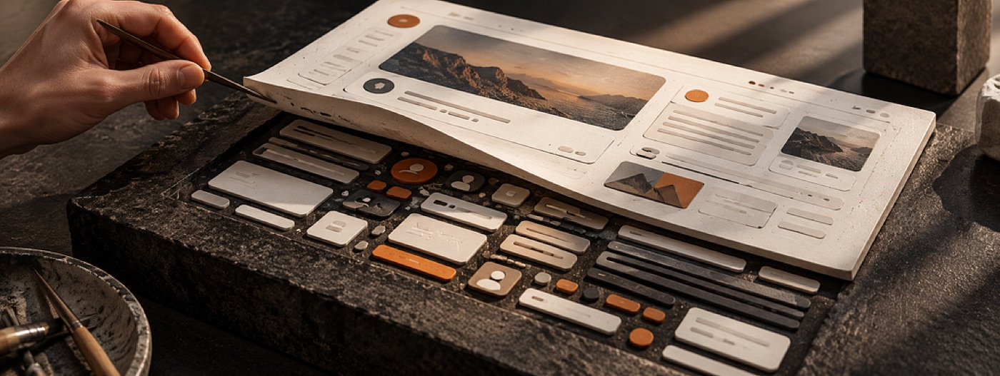
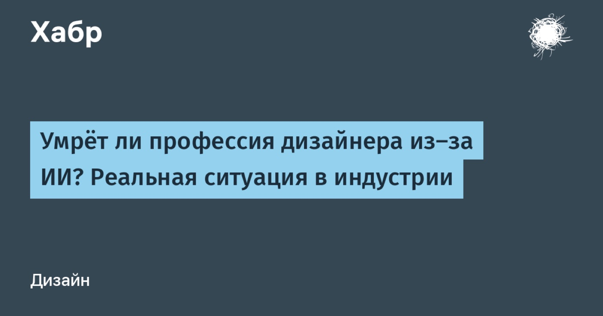
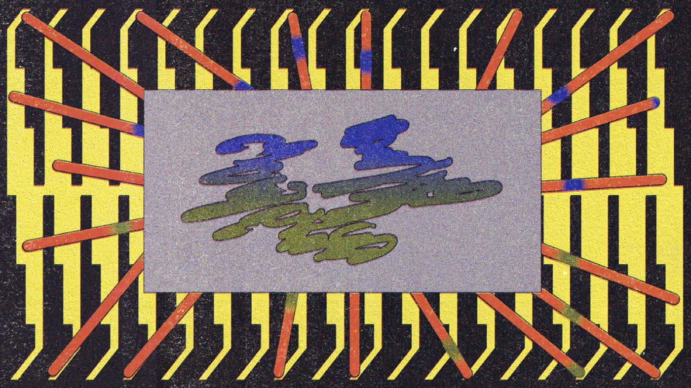
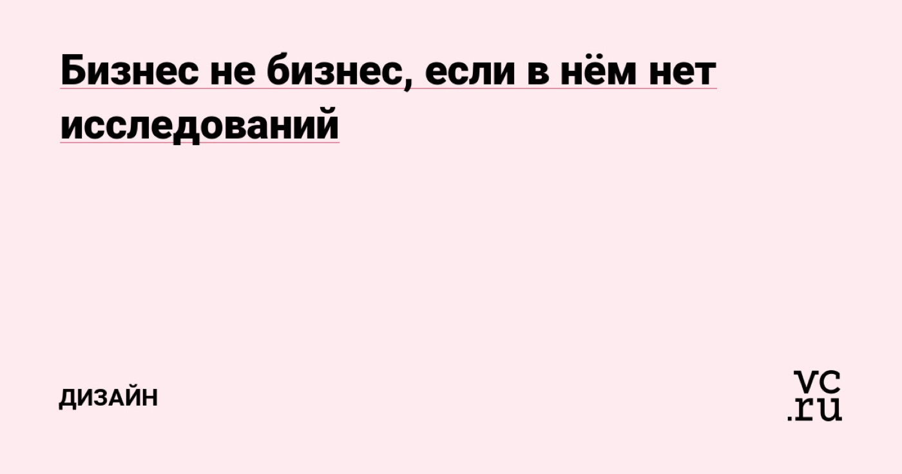
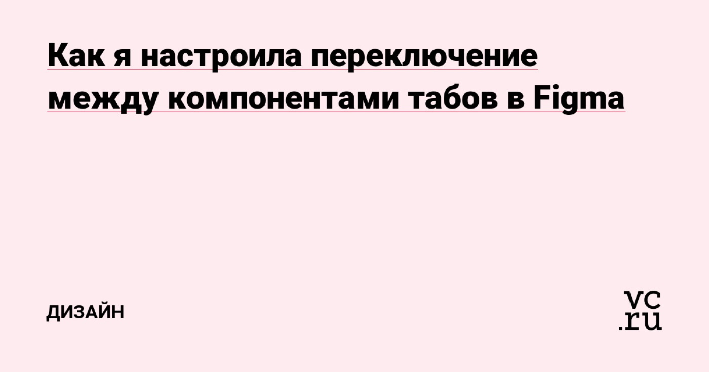
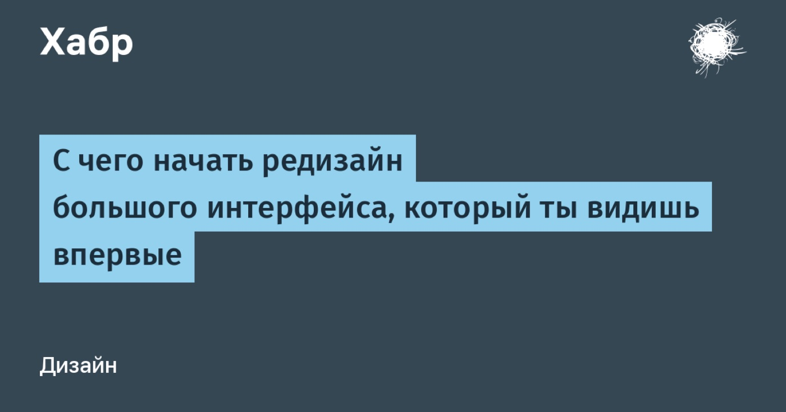
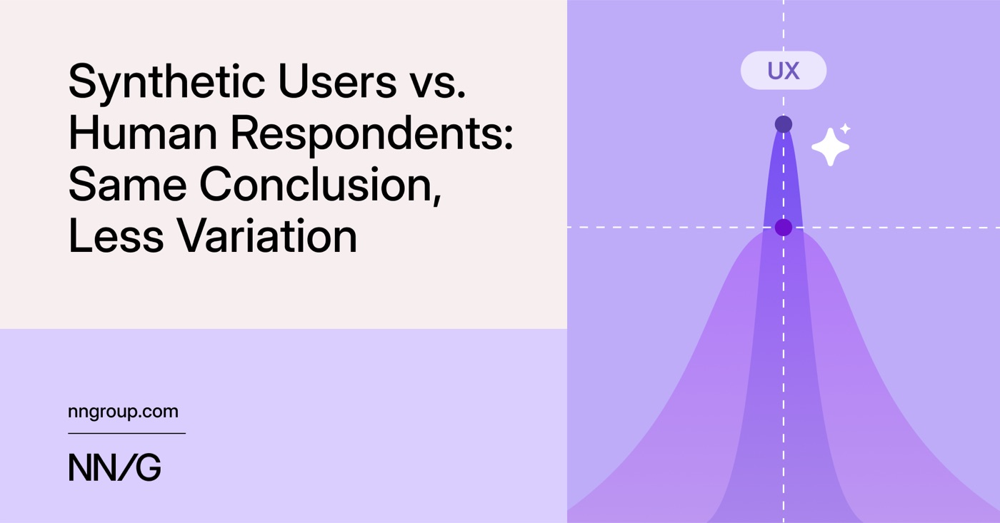
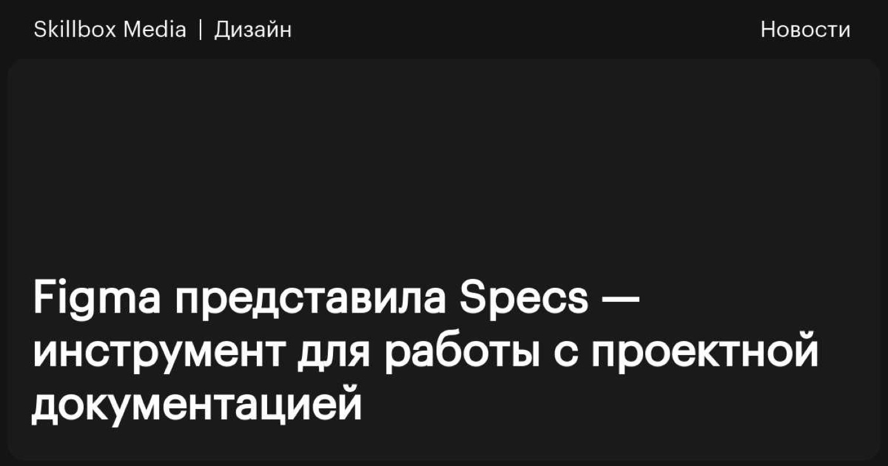

Никто не просил кнопку со звёздочкой
Автор, который пишет код с ИИ, объясняет, почему AI-панели со «звёздочкой» появляются везде. ИИ стоит встраивать в конкретный сценарий, а не в универсальную кнопку «Ask anything».
AI · UX/UI · дизайн-системы · инструменты
Самое интересное об AI, UX/UI и продуктовом дизайне. Идеи, инструменты и исследования, которые стоит прочитать.
Ручной отбор, без алгоритмической ленты
Автор, который пишет код с ИИ, объясняет, почему AI-панели со «звёздочкой» появляются везде. ИИ стоит встраивать в конкретный сценарий, а не в универсальную кнопку «Ask anything».

Опрос 521 UX-специалиста: ИИ экономит время, но 59% пользуются только одобренными инструментами. Внедрение сверху и ненадёжный результат съедают выгоду — она зависит от роли и проверки.

Виталий Фридман сравнивает стрелки, шевроны, треугольники и каретки в аккордеонах. Каретка — самый безопасный вариант; иконка и подпись не должны вести на разные действия. С исследованиями и примерами.

Обычно дизайн-систему собирают снизу вверх: атомы, компоненты, страницы. Автор предлагает обратный вход — от сценария на экране к нужным компонентам, чтобы не потерять смысл интерфейса за инвентаризацией.

Автор поговорил с дизайн-лидами Альфа-Банка, ВКонтакте, Билайна и Dodo Pizza. Массовых сокращений нет: ИИ забирает механическую работу, а найм смещается к специалистам, отвечающим за результат.

Практическое руководство: агент получает контекст из опубликованной библиотеки, компонентов, токенов и документации. На примере чекаута показано, как он собирает карточку заказа из утверждённых компонентов.

Алина Игнатьева объясняет, зачем бизнесу исследования и когда их запускать: падают продажи, непонятны причины, команда уверена, что «знает» клиента. Кейс личного кабинета показывает цену такой уверенности.

Кейс синхронизации дизайн-системы с кодом: в Figma три разных таба, в разработке — один компонент. Автор показывает, как привести свойства к общему виду и сохранить текст и состояния.

Лена Плинер разбирает подготовку к редизайну CRM/ERP-системы: анализ модулей, сценариев и повторяющихся механик. Вместо перерисовки страниц — карта связей и таблицы, которые находят системные расхождения.

NN/g задали один вопрос 604 людям и 120 синтетическим респондентам. Вывод совпал, но ответы ИИ оказались однообразнее: синтетика годится для гипотез, но не заменяет живые данные там, где важны нюансы.

Figma выпустила Specs — Markdown-документы рядом с макетом, связанные с элементами дизайна. Спецификации можно импортировать, комментировать и отдавать AI-агентам через MCP. Доступно в бете на платных тарифах.
Пол Боуг возвращается к книге Digital Adaptation, чтобы показать: внедрение ИИ снова сводят к закупке инструментов, забывая про процессы и людей. Выигрывают те, кто меняет способ работы, а не только стек.